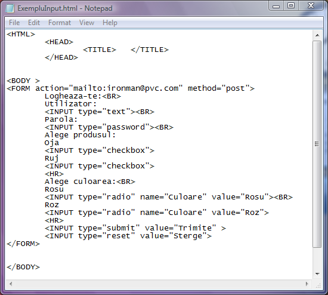

Eticheta INPUT
Cele mai multe controale se pot defini cu ajutorul etichetei INPUT. Atributele acestei etichete stabilesc ce fel
de controale se vor folosi precum si ce caracteristici vor avea acestea.
Atributul type
Acest atribut seteaza tipul de control. Valorile sale sunt:
type="button" defineste un buton caruia ulterior ii pot fi stabilite utilitatile.
type="submit" defineste un buton cu functionalitate prestabilita, declansand trimiterea datelor din formular.
type="reset" defineste un buton care, odata actionat, initializeaza valorile din toate celelalte controale
la valorile implicite
type="text" defineste o caseta de text in care utilizatorul poate introduce date de la tastatura.
type="radio" defineste butoane de optiuni dintre care doar una poate fi selectata la un moment dat.
type="checkbox" defineste casete de validare putand oferi selectii multiple din partea utilizatorului.
type="password" defineste caseta de text de tip parola, textul editat de utilizator nefiind lizibil
Iata mai jos un exemplu de formular in care am introdus diferite tipuri de controale definite cu eticheta INPUT. Atentie,
datele din acest formular nu vor merge nicaieri deoarece adresa de e-mail data ca valoare a atributului action nu este o
adresa valida.

In exemplu de mai sus ati putut remarca modul de implementare pentru diferitele tipuri de controale definite cu
eticheta INPUT. De asemenea, in pagina web care se deschide prin click pe cod, ati putut vedea si functionalitatea
acestor controale.
In plus, in cod mai poate fi observata si utilizarea altor atribute ale etichetei INPUT.
Atributul name
Atributul name are o valoare de tip text a carei semnificatie depinde de tipul de control. Astfel unul din scopuri este
identificarea unica a controlului de catre scripturi. In cazul in care se creaza grupuri de controale, toate elementele
grupului vor avea aceeasi valoare a atributului name. In exemplul precedent, cele doua butoane radio care stabilesc culoarea
au acelasi nume, name="culoare". Daca nu aveau acelasi nume, atunci nu era un grup si puteau fi selectate ambele butoane.
Atributul value
In cazul controalelor de tip buton de comanda atributul value seteaza textul care va aparea scris pe butonul respectiv.
In exemplul de mai sus butonul type="submit" are value="Trimite" iar butonul type="reset" are value="Sterge".
In cazul butoanelor radio din grup (butoane de optiune) valoarea atributului value este chiar valoarea ce va fi preluata si
trimisa serverului. Acelasi lucru este valabil si pentru casetele de validare checkbox.
Atributul maxlength
Acest atribut reprezinta lungimea maxima pe care o poate avea un sir de caractere introdus intr-o caseta de text.
Evident ca acest atribut se aplica numai controlului type="text".
Desigur ca atributele controalelor definite sunt mai numeroase. De exemplu atributul cheked fara nici o valore,
care face ca in mod implicit un control din formular sa fie selectat. Sau, alt exemplu, atributul disabled care face
ca un anumit control sa fie initializat ca dezactivat. Nici atributul disabled nu are nevoie de vreo valoare. Pentru
mai multe atribute ale etichetei INPUT si valori ale acestora puteti studia bibliografia recomandata in acest proiect.
Inapoi la Controale ...